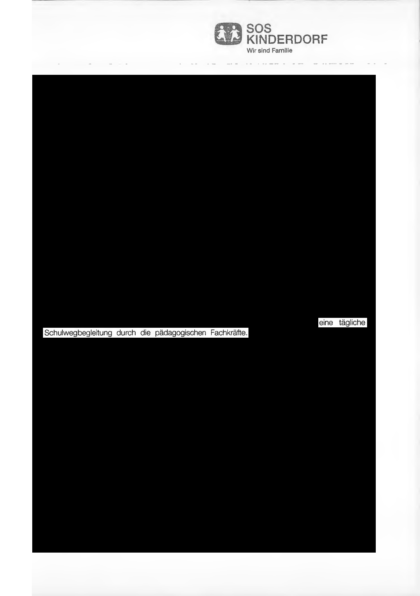
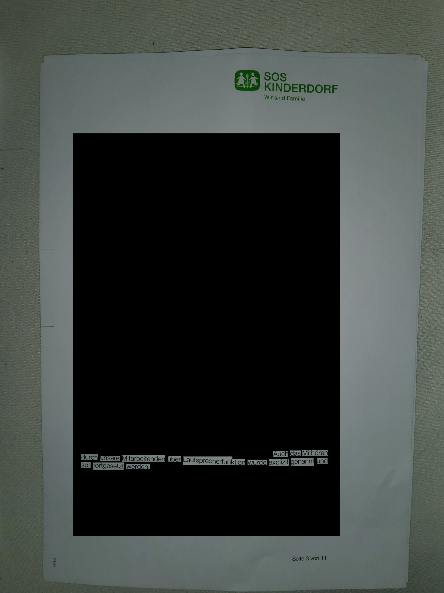
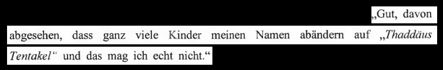
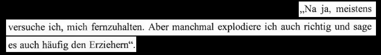
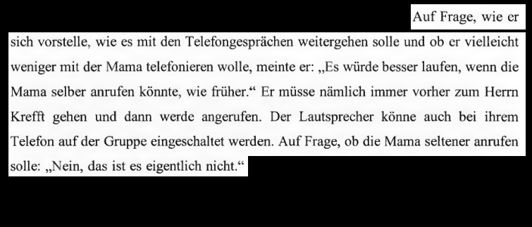
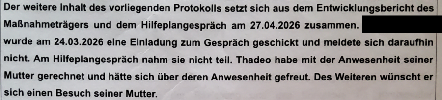
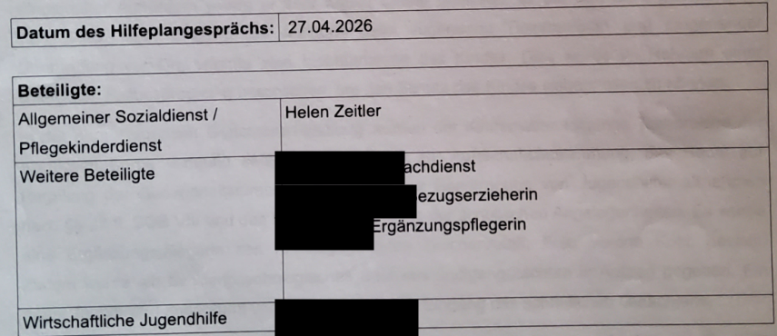
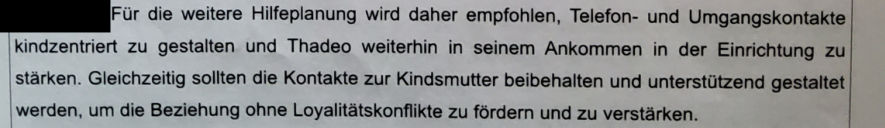
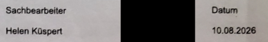

Warum diese Aktion entstanden ist
Wir wollen nicht mehr getrennt sein.
Diese Aktion ist entstanden, weil mein Sohn Thadeo und ich wieder zusammenleben wollen. Wir wollen nicht noch ein Weihnachten getrennt verbringen. Wir wollen unseren Alltag und unsere Weihnachtsfeste wieder gemeinsam erleben.
Weihnachten ist die Zeit, in der wir zusammenrücken. Doch wenn das eigene Kind fehlt, bleibt ein Platz leer. Für mich hat dieser Platz einen Namen. Thadeo.
Mein Sohn soll wieder nach Hause. Aus meiner Sicht gibt es keine Gründe, die seinen weiteren Verbleib im Heim rechtfertigen. Ich fordere, mildere Hilfen ernsthaft zu prüfen und mit uns eine konkrete Rückkehrperspektive zu erarbeiten.
Unsere Gespräche bleiben nicht zwischen uns.
Thadeo wird zur Schule gebracht und wieder zurückgebracht. Im Entwicklungsbericht des SOS-Kinderdorfs vom 21. April 2026 ist eine tägliche Schulwegbegleitung durch pädagogische Fachkräfte dokumentiert.

Auch unsere Telefonate bleiben nicht zwischen Mutter und Sohn. Mitarbeitende hören über die Lautsprecherfunktion mit. Das SOS-Kinderdorf bestätigt in seinem Schreiben vom 6. November 2026 ausdrücklich:
Auch das Mithören durch unsere Mitarbeitenden über Lautsprecherfunktion wurde explizit genannt und soll fortgesetzt werden.

Ich möchte mit meinem Sohn sprechen können, ohne dass jemand mithört. Ich möchte hören, wie sein Tag war, was ihn beschäftigt und was er sich wünscht. Und ich möchte ihn wieder bei mir haben.
Warum wird mein Sohn wie ein Gefangener behandelt?
Diese Frage stelle ich als seine Mutter. Wir wollen nicht noch ein Weihnachten getrennt verbringen. Während andere Familien ihre gemeinsame Zeit planen, kämpfen wir darum, überhaupt wieder einen gemeinsamen Alltag leben zu dürfen.
Thadeos eigene Worte müssen gehört werden.
Über die Hänseleien durch andere Kinder ist folgende Aussage von Thadeo dokumentiert:
„Gut, davon abgesehen, dass ganz viele Kinder meinen Namen abändern auf „Thaddäus Tentakel“ und das mag ich echt nicht.“

Auf die Frage, was er mache, wenn ihn das ärgere, antwortet er:
„Na ja, meistens versuche ich, mich fernzuhalten. Aber manchmal explodiere ich auch richtig und sage es auch häufig den Erziehern“.

Für die Telefonate wünscht er sich:
„Es würde besser laufen, wenn die Mama selber anrufen könnte, wie früher.“
Die Passage beschreibt außerdem, dass er vorher zu Herrn Krefft gehen müsse, und nennt die Möglichkeit, auf der Gruppe zu telefonieren. Auf die Frage nach selteneren Anrufen antwortet er: „Nein, das ist es eigentlich nicht.“

Wenn mein Kind sagt, dass ihn etwas verletzt oder belastet, muss das ernst genommen werden. Seine Wünsche gehören in die Entscheidungen über seinen Alltag und unsere Kontakte.
Wo bleibt der Plan für seine Rückkehr?
Am 27. April 2026 fand ein als Hilfeplangespräch bezeichnetes Gespräch statt. Ich nahm daran nicht teil. Das steht ausdrücklich im Originalprotokoll: „Am Hilfeplangespräch nahm sie nicht teil.“ Weder Thadeo noch ich sind in der Liste der Beteiligten aufgeführt. Eine Einladung ist bei mir nicht angekommen. Das Jugendamt schreibt im Protokoll, am 24. März 2026 eine Einladung verschickt zu haben. Den Zugang dieser Einladung bestreite ich.
Originalstellen zur Teilnahme ansehen


Ich bezeichne dieses Vorgehen als Scheinhilfeplanung: Über die Zukunft meines Kindes wurde ohne meine Teilnahme gesprochen. Ich fordere eine Hilfeplanung, die Thadeo und mich tatsächlich beteiligt und seine Rückkehr nach Hause konkret prüft.
Auf Seite 4 des Originalprotokolls steht:
Für die weitere Hilfeplanung wird daher empfohlen, Telefon- und Umgangskontakte kindzentriert zu gestalten und Thadeo weiterhin in seinem Ankommen in der Einrichtung zu stärken.
Der anschließende Satz empfiehlt, die Kontakte zur Mutter beizubehalten und unterstützend zu gestalten. Eine konkrete Rückführungsplanung mit Schritten und Zeitrahmen enthält das Protokoll nicht.

Warum soll Thadeo im Heim ankommen – und wo ist der konkrete Plan für seinen Weg nach Hause?
Auch die zeitliche Abfolge wirft Fragen auf: Das Gespräch fand am 27. April 2026 statt. Das Protokoll trägt das Datum 5. Juni 2026. Das Übersendungsschreiben von Helen Küspert ist erst auf den 10. August 2026 datiert – 105 Tage nach dem Gespräch.

Frau Küspert, warum wurde mir dieses Protokoll erst Monate später übersandt? Wie sollte ich rechtzeitig Stellung nehmen und an der Hilfeplanung mitwirken?
Wofür ist ein Hilfeplan da?
Ein Hilfeplan soll den Hilfebedarf, die Hilfe und die notwendigen Leistungen gemeinsam mit den Personensorgeberechtigten und dem Kind klären. Bei Hilfen außerhalb der Familie muss auch die Perspektive der Hilfe geklärt und dokumentiert werden. Dazu gehört die Prüfung, ob und wie eine Rückkehr in die Herkunftsfamilie erreicht werden kann.
Nach meiner Darstellung gibt es bisher keine gerichtliche Umgangsregelung. Ich kritisiere, dass Jugendamt und Ergänzungspflegerin Frau Schüller keinen verlässlichen erweiterten Kontakt ermöglichen und Herr Kreft beim SOS-Kinderdorf weitere Umgänge verweigert. Ich fordere nachvollziehbare Entscheidungen, verlässliche Kontakte und die Beteiligung meines Kindes.
Hört auf, an SOS-Kinderdörfer zu spenden.
Mein Vorwurf ist, dass im Fall meines Sohnes bei SOS-Kinderdorf Kinderrechte eingeschränkt werden. Unterstützt unsere Postkartenaktion mit Briefmarken und macht auf die Situation von Kindern in Heimen aufmerksam.
Mein Kind ist nicht das einzige Kind, das Weihnachten fern von seiner Familie verbringt. Diese Aktion soll auch andere betroffene Familien sichtbar machen und auf Missstände in SOS-Kinderdörfern und anderen Heimen aufmerksam machen. Sie richtet sich an alle Kinder, die in Deutschland leben. Ihre Herkunft ändert nichts an ihren Rechten.
Bitte macht mit. Schreibt eine Postkarte. Fragt nach. Gebt den Kindern und ihren Familien eine Stimme. Jede Karte trägt unsere Fragen dorthin, wo Entscheidungen getroffen werden.